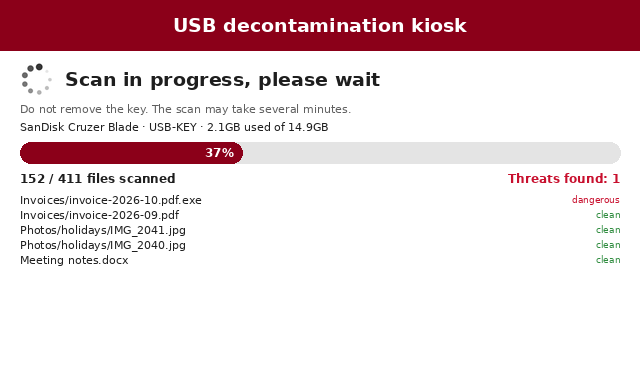

Hack.lu 2026 · Live demo
Pandora-Box
USB decontamination device
An open source, offline, hardened sheep-dip kiosk.
Plug in a USB key. Watch it get scanned. Touch to clean.
Plug in a USB key. Watch it get scanned. Touch to clean.
USB keys remain a common way into otherwise well-protected systems. Pandora-Box checks
every file with several detection engines, shows the dangerous ones on a touch screen and removes them,
before the key reaches a workstation. Free, auditable, hardened — for healthcare, industry and public administration.
01
Insert
Plug a USB key into the kiosk. No login, no buttons, no network.
02
Scan
Every file goes through ClamAV, YARA-X, MalwareBazaar, Hashlookup and heuristics.
03
Clean
Threats are listed, quarantined, then removed with one touch. A JSON report is kept.


Fail closed
A file that could not be fully scanned is never reported as clean.
Hardened image
Debian 13, read-only root with dm-verity, Secure Boot, USBGuard against BadUSB.
Sandboxed engines
Each engine runs in bubblewrap with no network access.
Signed updates
Signatures and A/B system updates, offline from USB, automatic rollback.
Cheap hardware
Refurbished Lenovo ThinkCentre Tiny + 7" Waveshare touch screen, 3D-printed case.
Customizable
Logo, colors, texts and language of the interface set by the organization.
StackPython 3.11 · Pillow framebuffer UI (no X, no browser) · Debian 13 · mkosi · systemd-boot · systemd-sysupdate · dm-verity · USBGuard · bubblewrap · nftables · tested end-to-end in QEMU/KVM